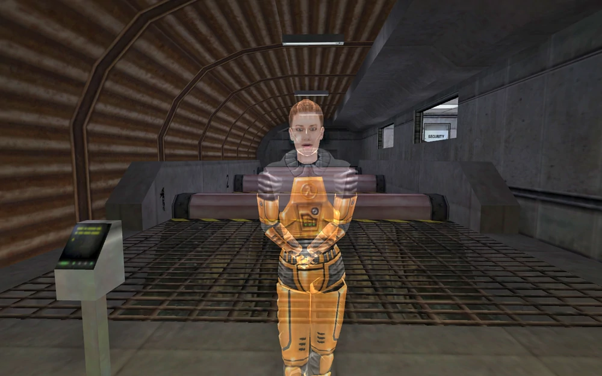
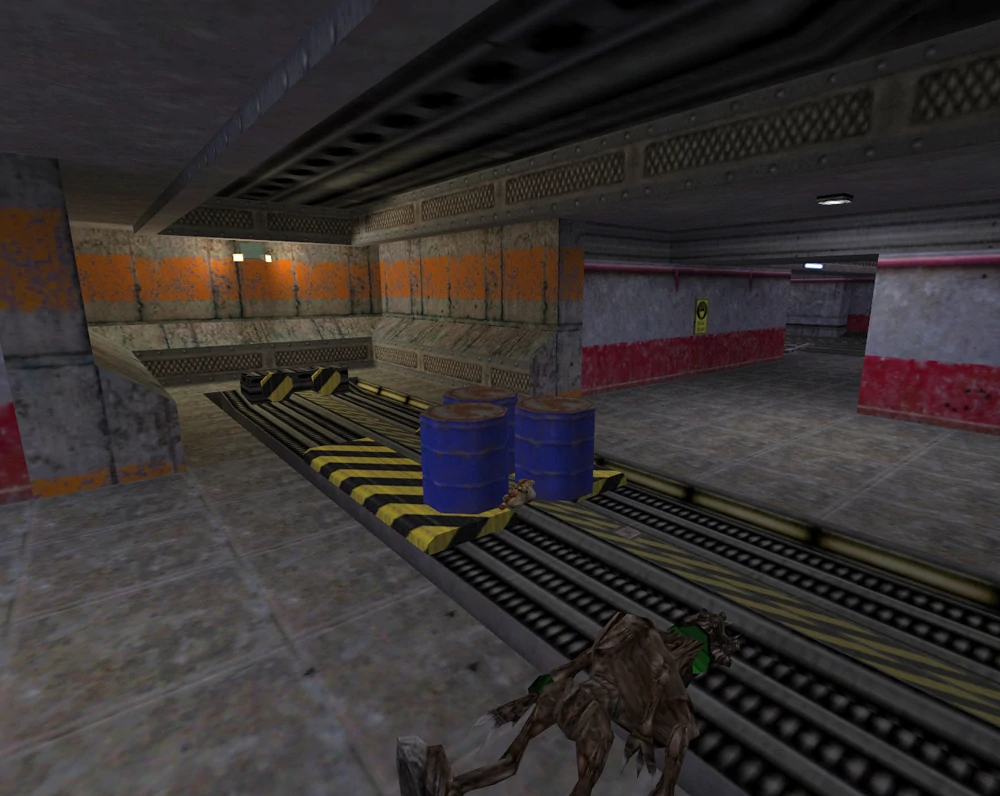

Кооперативное дополнение разработана Gear Box Software изданное Valve специально
для консоли PlayStation 2, однако уже портированна умельцами и на ПК.
В игре вы и ваш друг берут под управление двух девушек Колет Грин и Джину
Кросс. В целом ваша задача на игру подготовить к запуску коммуникационный
спутник, который позже запускает Фримен в Half-Life.
Доктор Кросс и доктор Грин являются членами другой команды в Black Mesa, отличной от
главного героя Half-Life, Гордона Фримена. Они несут ответственность за мониторинг оборудования,
которое Гордон использует во время эксперимента, и, в свою очередь, за ними наблюдают доктор
Розенберг и доктор Келлер. Как и Фриман, они вынуждены бороться за выживание после Каскада
Резонанса.
Постер
Сюжет
Глава 1: Двойной доступ
В первой главе Джина Кросс и Колетт Грин доставляют Фримену тестовый образец и
активируют антимасс-спектрометр незадолго до того, как происходит «инцидент» (Резонансный
коскад).
Розенберг и Келлер разговаривают
Глава 2: Обучающий курс
Джина Кросс и Колетт Грин должны сопроводить доктора Розенберга через зону Опасного курса
(Учебный центр, Сектор А) на поверхность, чтобы вызвать военную помощь.

Тренеровочная зона в секторе A
Глава 3: Поверхностный зов
Кросс, Грин и Розенберг достигают поверхности с целью получить доступ к Центру спутниковой
связи. Однако они обнаруживают, что входная дверь в Центр связи заперта, что вынуждает Кросса и
Грина кружить по ближайшим складам, чтобы добраться до незапертого черного входа. Оказавшись
внутри, они вручную настраивают спутниковую антенну, и Розенберг успешно связывается с военными,
а Кросс и Грин возвращаются в сектор C.

Железная дорога
Глава 4: Резонанс
Кросс и Грин возвращаются в Аномальные материалы и снова связываются с доктором Келлером. Доктор
Келлер решает, что лучший способ действий - повторно задействовать демпфирующие поля, что, по
его мнению, положит конец Каскаду Резонанса. Для этого Кросс и Грин путешествуют по объекту и
успешно сбрасывают вторичный и первичный демпфирующие замки. Однако вскоре после этого
демпфирующие поля выходят из строя. Келлер обнаруживает, что сбой был вызван преднамеренным
вмешательством с другой стороны разломов, и понимает, что не все инопланетяне могли оказаться
там случайно.
Келлер инструктирует Колетт и Джин
Глава 5: Домашнее насилие
Келлер вынашивает план по созданию реверсивного резонанса с помощью прототипа маяка смещения в
Гамма-лабораториях. Однако ему нужен спутник на орбите, прежде чем он сможет реализовать план.
Персонал высотного стартового центра готов запустить спутник, но из-за действующей военной
блокировки воздушного движения они не могут этого сделать. Чтобы снять блокировку, нужен
полностью чистый код. Келлер, Грин и Кросс используют транспортную систему, чтобы добраться до
ближайших общежитий третьего уровня. Там они начинают искать охранника с кодами. Их задача
усложняется тем фактом, что солдаты HECU также присутствуют и заняты устранением ученых и
сотрудников службы безопасности. В конце концов, охранник найден. Вооружившись кодами, Кросс,
Грин и Келлер отправляются к центру управления воздушным движением Черной Мезы на поверхности.
Общежития Южное крыло, ур. 3
Глава 6: Код, зелённый
Кросс и Грин, после нескольких боев с солдатами HECU и после успешного отбивания V-22 Osprey,
сумели обезопасить здание управления воздушным движением в Черной Мезе. Они продолжают вводить
коды полной очистки и снимать военную блокировку воздушного движения. Затем они возвращаются к
Келлеру и возвращаются под землю, чтобы найти путь к Гамма-лабораториям.
Управление воздушным движением
Глава 7: Crossfire
Следующая задача для Кросса и Грина — вручную поднять прототип маяка в лаборатории Гамма на
поверхность, чтобы его можно было активировать. Келлер достигает главной лаборатории, но не
может поднять маяк оттуда из-за препятствия. Получив доступ к лабораториям через дренажные
каналы, Кросс и Грин путешествуют по нижним уровням лабораторий, встречая и сражаясь с солдатами
HECU и существами Зен на своем пути. Они достигают маяка, устраняют препятствие, препятствующее
подъему маяка, и успешно поднимают маяк.
Гамма лаборатория
Глава 8: Интенсивность
Кросс и Грин возвращаются к Келлеру в зону управления лабораторией, где он дает им задание
активировать матричную систему луча, которая обеспечивает питание, необходимое для прототипа
маяка смещения. Для этого они сначала спускаются на лифте в карантинные лаборатории пришельцев,
которые были захвачены существами Зена. После навигации по лабораториям они достигают матрицы
луча и пытаются активировать ее, одновременно защищая ее от Вортигонтов и Ворчунов, которые
быстро телепортируются внутрь. Матрица луча активируется, и Кросс и Грин возвращаются к Келлеру,
который делает последний подготовка к реверсированию резонанса.
Кристалы
Глава 9: Рифт (Rift)
Кросс и Грин вынуждены защищать маяк смещения от множества атакующих существ Зен, включая ската
манта. В разгар битвы оба персонажа попадают в состояние, которое доктор Келлер объясняет как
«гармонический рефлюкс». Именно во время этой последовательности можно услышать голос доктора
Розенберга, предупреждающий, что он «не может дольше держать портал открытым», намекая на
совпадающее путешествие Калхуна в Зен во время Синего сдвига. Затем доктор Кросс и доктор Грин
благополучно возвращаются, и доктор Келлер поздравляет их с успехом.
Инверсия резонанса, по-видимому, привела к сильному ослаблению резонансного
каскада. До сих пор остается неясным, удалось ли врачам пережить ядерный взрыв, который
происходит в конце Opposing Force.
Розенберг и Келлер
Дополнительное
Бонусная глава: Атака Ксена
Это бонусная глава Half-Life: Decay. В нем два вортигонта по имени «Дроны-субъекты» X-8973 и
R-4913 должны найти образец кристалла, который использовался в тестах (и был украден G-Man) в
Черной Мезе, и вернуть его своему лидеру Нихиланту. Также интересно отметить, что сам уровень
связан с гаражом, как это видно ближе к концу Half-Life: Opposing Force, где ядерная боеголовка
обезвреживается Адрианом Шепардом и перезагружается G-Man-ом.